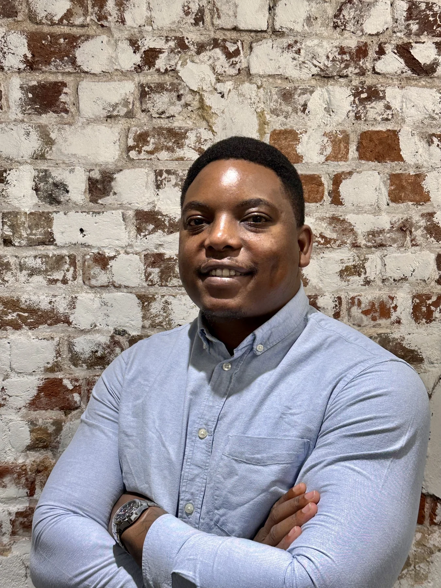
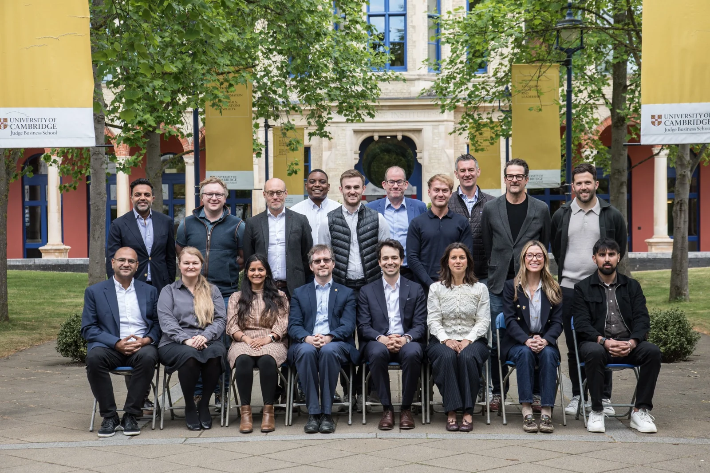
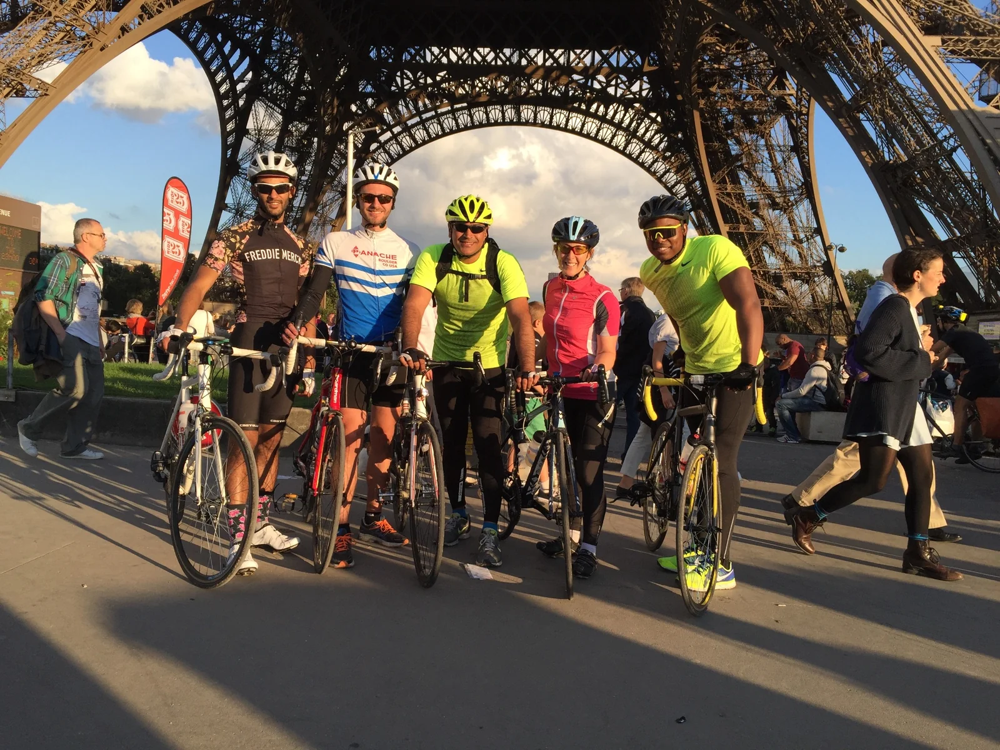
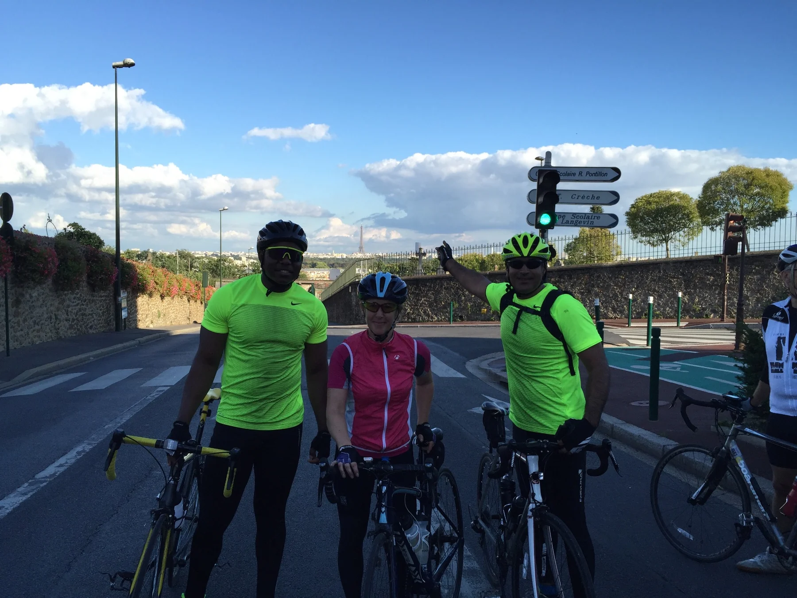

Enterprise Strategy
Translate complex objectives into practical roadmaps, adoption plans and operating decisions that leadership teams can support.
Enterprise Strategy • AI Transformation • Customer Success
I help global organisations align stakeholders, accelerate adoption, reduce operational risk and unlock sustainable commercial growth.

Trusted by Global Enterprises


Selected organisations I have worked with during my career. Logos are shown for identification only and do not imply endorsement.
What I deliver
I operate at the intersection of customer strategy, operational execution and enterprise technology—turning ambiguity into clear decisions, stakeholder alignment and measurable results.
Translate complex objectives into practical roadmaps, adoption plans and operating decisions that leadership teams can support.
Apply generative AI to real workflows with a focus on productivity, governance, user confidence and repeatable value.
Build trusted partnerships that improve adoption, protect renewals, reduce risk and uncover responsible expansion opportunities.
Selected client stories
These examples show how I frame technical programmes around business value, operational resilience and customer confidence.
Merck · Adoption & ROI
Designed a targeted workshop around adoption barriers across multiple business units, aligning stakeholders on practical use cases and helping teams embed the product into their workflows.
Edenred · Scale & growth
Led demos, enablement and ongoing guidance across approximately 15 independently managed Salesforce organisations while navigating compliance requirements and a phased rollout.
Philip Morris International · Expansion
Expanded backup coverage, onboarded Swedish Match and identified two production environments approaching storage limits. Positioned Archive around continuity and long-term cost efficiency.
Polpharma · Compliance & resilience
Collaborated with a specialist consultant to test an end-to-end restore process that preserved audit history and traceability for a complex TrackWise Digital implementation.
Howden · Recovery & renewal
Took ownership of performance concerns across 14 production organisations, coordinated Engineering and Tier 4 teams, and aligned technical, operational and contractual planning.
AI & applied innovation
Executive education at Cambridge Judge Business School strengthened my approach to responsible, outcome-led AI adoption. I translated that learning into an internal meeting assistant grounded in trusted systems, designed to improve preparation, agenda quality and consistency across customer engagements.

How I work
Technology should support the business objective, not become the objective.
Transformation succeeds through credibility, communication and shared ownership.
Every initiative should demonstrate operational, commercial or customer value.
Leadership means evolving with the industry and enabling others to do the same.
My journey
Built the technical grounding that became the foundation for a career in enterprise technology and consulting.
Progressed through consulting and architecture roles, translating technical complexity into practical customer outcomes.
Earned trust to manage strategic customers, recover difficult accounts, mentor colleagues and support the wider EMEA team.
Recognised for commitment to values, contribution to the team and individual results.
Combining commercial thinking, customer leadership and technical fluency to deliver measurable transformation.
Beyond the office
Completing the London-to-Paris charity cycle over three days remains one of my proudest personal achievements. It reinforced the same qualities I bring to work: preparation, consistency, teamwork and the determination to finish what I start.
London to Paris · Three days · One unforgettable finish line.


Let’s connect
I’m open to conversations about senior strategy, operations, transformation and customer leadership opportunities.
maxwell.ngangira@gmail.com